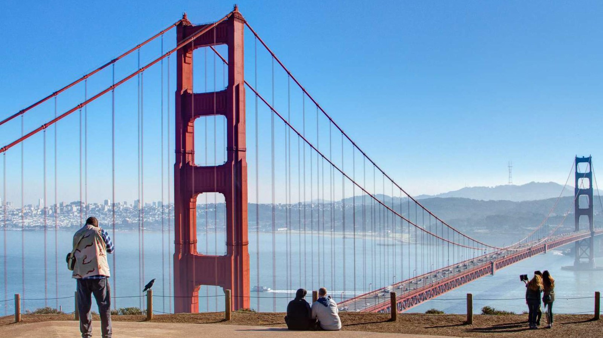
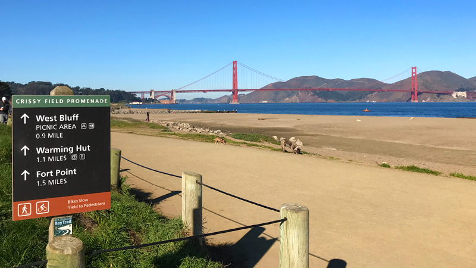
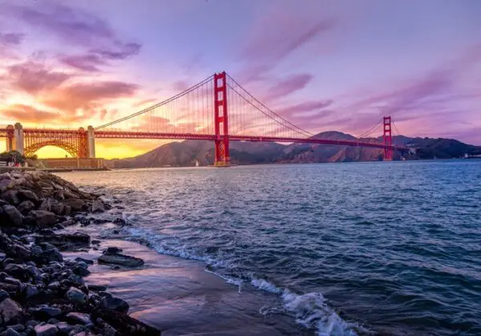
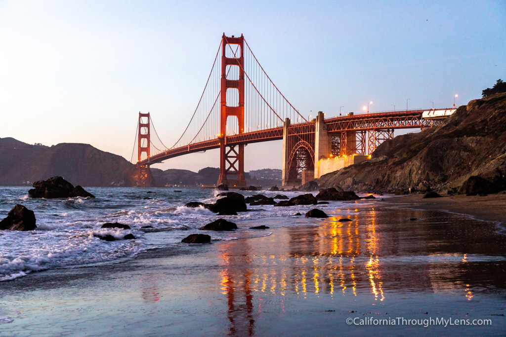
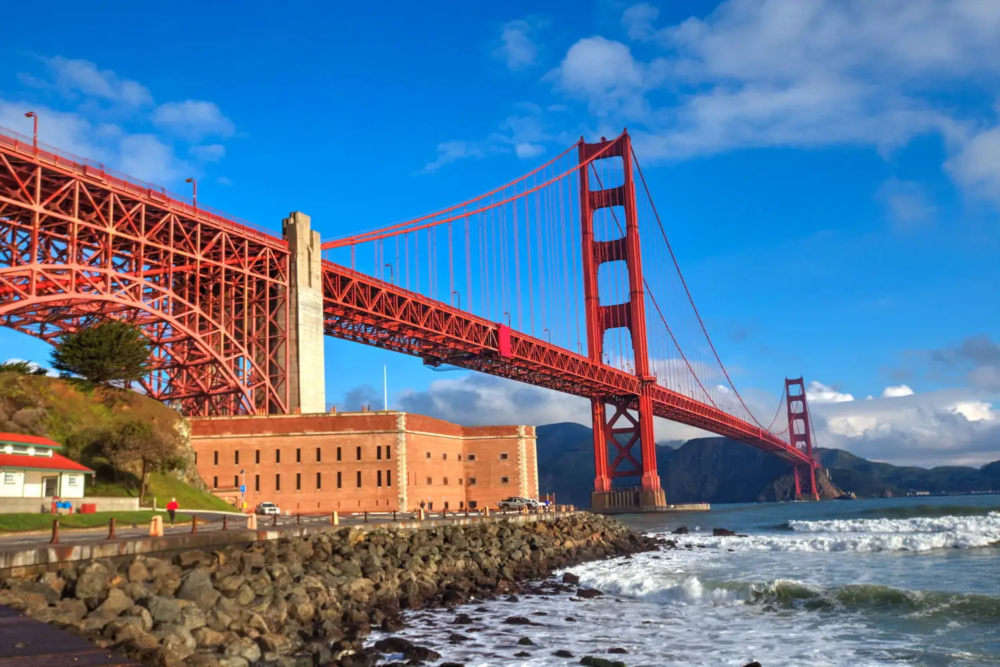
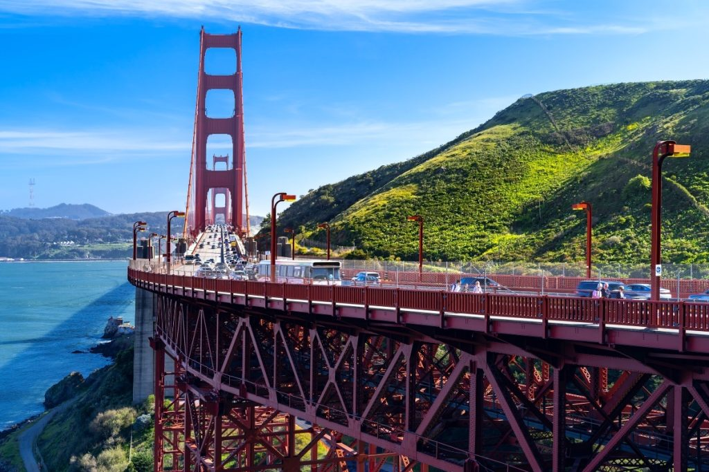
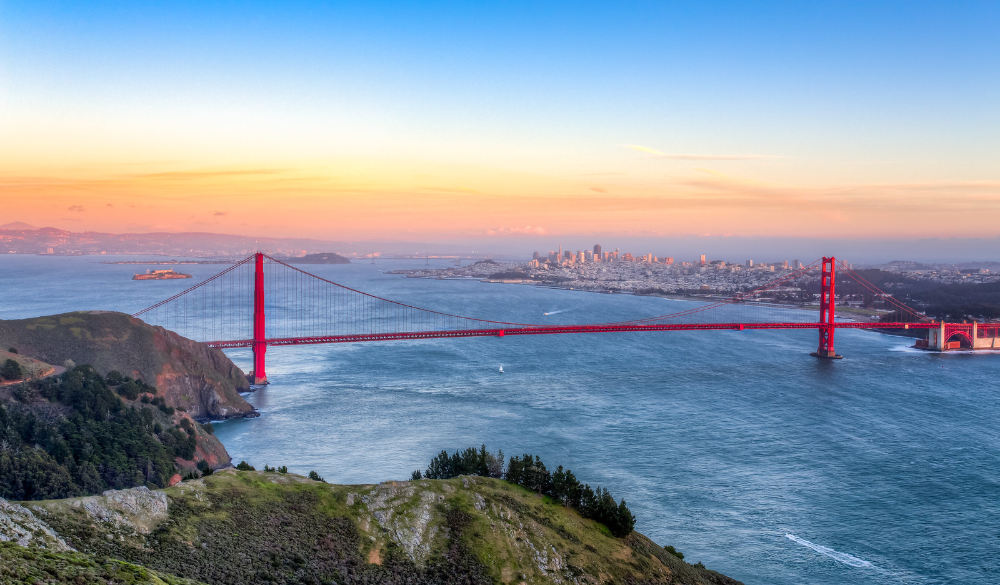

Best Places to View the Golden Gate Bridge

Battery Spencer
Iconic close-up view with dramatic angles.

Golden Gate Overlook
Perfect Instagram symmetry spot.

Crissy Field
Relaxing beach view with bridge backdrop.

Baker Beach
Golden sunsets + waves framing the bridge.

Marshall’s Beach
Dramatic cliffs & peaceful views.

Fort Point
Stand directly under the bridge.

Vista Point
Classic postcard viewpoint.

Hawk Hill
Panoramic aerial-style views.